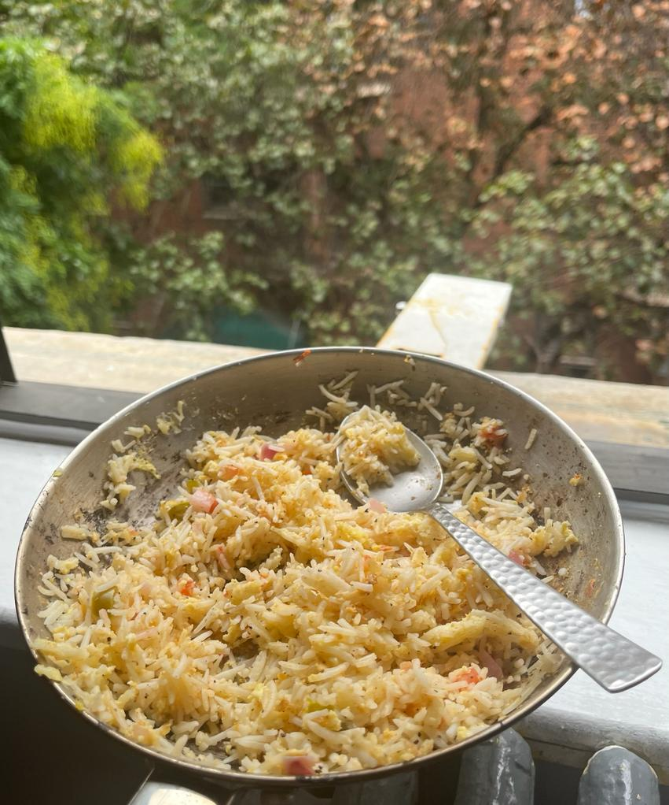

Egg Rice
Egg Rice
Recipe:
- Eggs
- Rice
- Salt
- Pepper
- Chilli Powder
- Diced Onion
- Diced Tomato
Egg Rice is a comfort food for me. It is super easy to make. First, cook the rice you'd need. On the other hand, take eggs in proportion to the rice and the quantity of eggs you want. Then break the eggs in a different container, mix it thoroughly and add chopped onion, tomato and any other vegetables of your choice. Add salt, pepper and chilli powder according to taste. Take a pan and add your cooked rice with this mixture in it. Thoroughly stir them together and let them cook till the eggs are fully cooked. The dish is ready, enjoy!
Here is
another recipe
to make the dish, mine is just easier and quicker